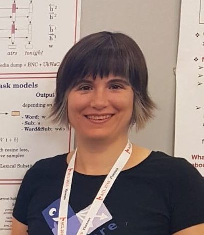

I am an ICREA Research Professor in the
Department of Translation and Language Sciences of the
Universitat Pompeu Fabra (Barcelona, Spain),
and the co-head of the Computational Linguistics and Linguistic Theory (COLT) research group.
I am a linguist who uses quantitative and computational methods to investigate how language works. I am in particular interested in how people convey meaning through language. I work with computational models (distributional semantics, neural networks) that are able to induce very rich and flexible linguistic representations directly from examples of language use.
I am funded by an ERC Starting Grant.
Keywords: lexical semantics, concepts, categories, reference, lexicon, semantic theory, computational semantics, quantitative linguistics, data science for linguistics, computational linguistics, natural language processing, linguistics.
The best way to reach me is by e-mail: firstname.lastname@upf.edu. Here you have my full contact information.
Thinking of applying for an ERC grant, or a post-doctoral fellowship in Spain or Europe? Here you will find successful applications in case that helps.
representative publications
- Brochhagen, T., G. Boleda. 2022. When do languages use the same word for different meanings? The Goldilocks Principle in colexification. To appear in Cognition.
- Boleda, G. 2020.
Distributional Semantics and Linguistic Theory. Annual Review of Linguistics, Vol. 6: 213-23. (Pre-print version)
- Silberer, C., S. Zarrieß, M. Westera, G. Boleda. 2020.
Humans Meet Models on Object Naming: A New Dataset and Analysis.
In Proceedings of COLING 2020, 1893-1905.
- McNally, L., G. Boleda. 2017.
Conceptual Versus Referential Affordance in Concept Composition.
In Yoad Winter & James Hampton (eds.) Compositionality and Concepts in Linguistics and Psychology 245-267. Springer.
news
- May 2022: will teach Distributional Semantics at the Summer school "Annotations" (May 30 - June 3, Banyuls-sur-Mer, France).
- May 2022: paper accepted in Cognition: When do languages use the same word for different meanings? The Goldilocks Principle in colexification, with Thomas Brochhagen.
- April 2022: two papers accepted a CogSci 2022: Woman or tennis player? Visual typicality and lexical frequency affect variation in object naming, with Eleonora Gualdoni, Andreas Mädebach, and Thomas Brochhagen; and Effects of task and visual context on referring expressions using natural scenes, with Andreas Mädebach, Eleonora Gualdoni, and Ekaterina Torubarova.
- April 2022: will be an invited speaker at the Amsterdam Colloquium this year (happening in December).
- April 2022: co-organized the AMORE Mini-workshop on Referential Information in Deep Learning Models.
- April 2022: paper accepted at the Third Workshop on Insights from Negative Results in NLP: "Challenges in including extra-linguistic context in pre-trained language models", with Ionut-Teodor Sorodoc and Laura Aina.
- March-April 2022: my two PhD students Laura Aina and Ionut-Teodor Sorodoc successfully defended their theses. Congratulations! :)
- March 2022: co-organized the AMORE Mini-workshop on Linguistic Ambiguity and Deep Learning.
- December 2021: Abralin Ao Vivo talk "When do languages use the same word for different meanings? The Goldilocks Principle in the lexicon" (video; paper).
- December 2021: two abstracts accepted at SCiL: Horse or pony? Visual typicality and lexical frequency affect variability in object naming, with Eleonora Gualdoni, Thomas Brochhagen, and Andreas Mädebach, and The interaction between cognitive ease and informativeness shapes the lexicons of natural languages, with Thomas Brochhagen.
- September 2021: project granted (co-PI with Louise McNally): CORE: Contextual effects in the choice of referring expressions for visually presented entities (PID2020-112602GB-I00).
- September 2021: paper accepted at BlackBoxNLP 2021: Controlled tasks for model analysis: Retrieving discrete information from sequences, with Ionut Sorodoc and Marco Baroni.
- September 2021: paper published in the Cognitive Science journal: Distributional models of category concepts based on names of category members with Matthijs Westera, Abhijeet Gupta, and Sebastian Padó.
- September 2021: paper accepted at CoNLL 2021: Does referent predictability affect the choice of referential form? A computational approach using masked coreference resolution, with Laura Aina, Xixian Liao, and Matthijs Westera.
- May 2021: back from a 6-month long sick leave caused by my psychiatric illness.